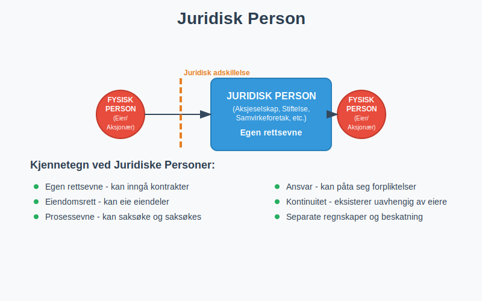
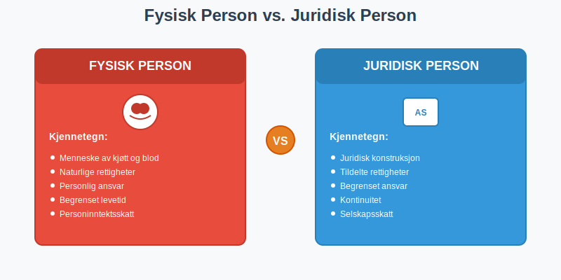
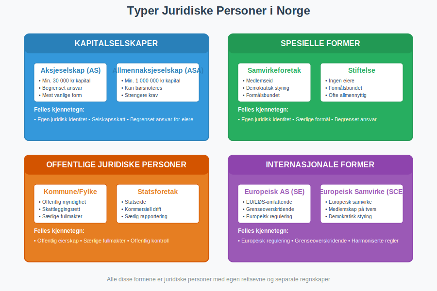
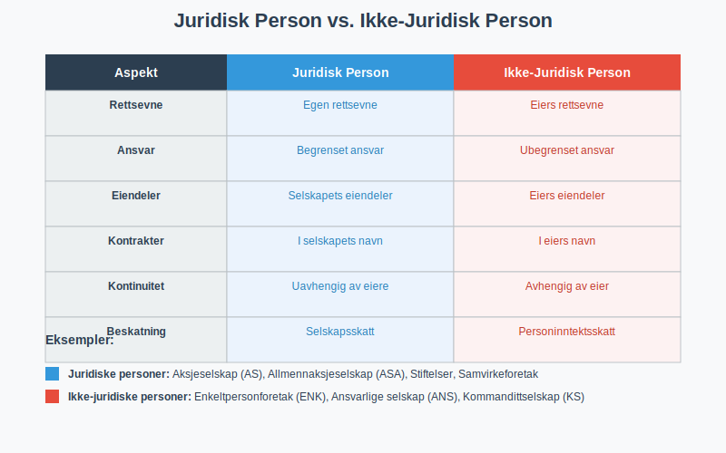
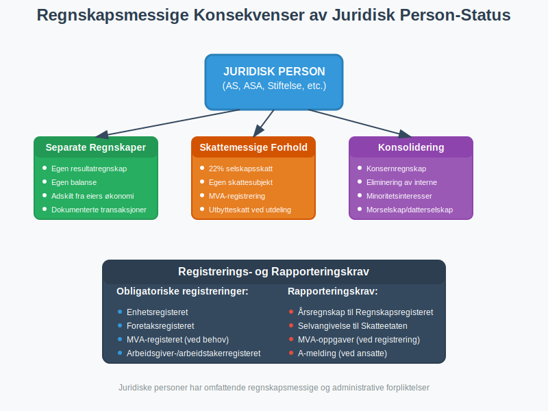
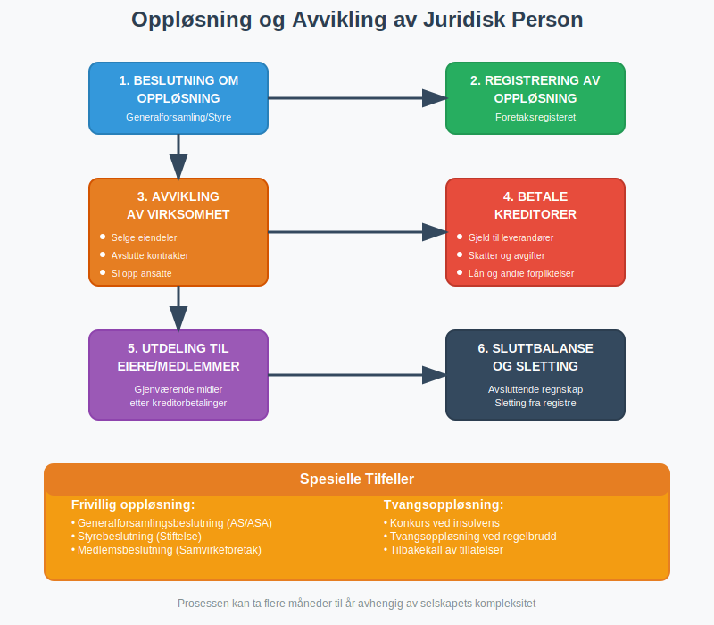

En juridisk person er en grunnleggende juridisk konstruksjon som gir en organisasjon eller enhet rettigheter og plikter som er separate fra de fysiske personene som eier eller kontrollerer den. I regnskapssammenheng er forståelsen av juridiske personer avgjørende for korrekt bokføring, rapportering og skattemessig behandling.

Definisjon av Juridisk Person
En juridisk person er en enhet som i lovens øyne behandles som en person med egne rettigheter og forpliktelser, selv om den ikke er en fysisk person. Dette juridiske konseptet skiller mellom:
- Fysiske personer - mennesker med juridiske rettigheter
- Juridiske personer - organisasjoner og enheter med juridiske rettigheter
Kjennetegn ved Juridiske Personer
Juridiske personer har flere viktige karakteristikker:
- Egen rettsevne - kan inngå kontrakter i eget navn
- Eiendomsrett - kan eie eiendeler og rettigheter
- Prosessevne - kan saksøke og saksøkes
- Ansvar - kan påta seg forpliktelser og gjeld
- Kontinuitet - eksisterer uavhengig av eiernes liv

Typer Juridiske Personer i Norge
Kapitalselskaper
Aksjeselskap (AS)
Aksjeselskapet er den mest vanlige formen for juridisk person:
- Begrenset ansvar for aksjonærene
- Egen juridisk identitet adskilt fra eierne
- Selskapets eiendeler tilhører selskapet, ikke aksjonærene
- Kontinuitet - selskapet eksisterer selv om aksjonærer skiftes ut
Allmennaksjeselskap (ASA)
For større selskaper med offentlig eierskap:
- Samme juridiske status som AS, men større
- Strengere regulering og rapporteringskrav
- Børsnoterte selskaper er typisk ASA
- Høyere kapitalkrav og offentlighet
Samvirkeforetak
Samvirkeforetak er juridiske personer basert på medlemskap:
- Medlemseid og demokratisk styrt
- Egen rettsevne som juridisk person
- Begrenset ansvar for medlemmene
- Formålsbundet virksomhet for medlemmenes interesser
Stiftelser
Stiftelser er juridiske personer uten eiere:
- Formålsbundet - må følge stiftelsens vedtekter
- Ingen eiere - styres av et styre
- Egen juridisk identitet med rettigheter og plikter
- Kontinuitet - eksisterer på ubestemt tid
- Særegne regnskapsregler og skattemessige forhold
Offentlige Juridiske Personer
Kommuner og Fylkeskommuner
- Offentlige juridiske personer med særlige fullmakter
- Skattleggingsrett og myndighetsutøvelse
- Egen økonomi og regnskapsplikt
Statsforetak og Statlige Selskaper
- Statseide juridiske personer med kommersiell drift
- Samme juridiske status som private selskaper
- Særlige rapporteringskrav til staten

Juridiske Personer vs. Ikke-Juridiske Personer
Ikke-Juridiske Personer
Enkelte organisasjonsformer er ikke juridiske personer:
Enkeltpersonforetak (ENK)
Enkeltpersonforetaket er ikke en juridisk person:
- Eieren er den juridiske personen - ikke foretaket
- Ingen adskillelse mellom eier og virksomhet
- Ubegrenset personlig ansvar for eieren
Ansvarlige Selskap (ANS)
- Ikke egen juridisk person - deltakerne er de juridiske personene
- Solidarisk ansvar for alle deltakere
- Ingen begrenset ansvar eller juridisk adskillelse
Kommandittselskap (KS)
- Ikke juridisk person i tradisjonell forstand
- Komplementarene har ubegrenset ansvar
- Kommandittistene har begrenset ansvar, men selskapet er ikke juridisk person
Sammenligning: Juridisk Person vs. Ikke-Juridisk Person
| Aspekt | Juridisk Person | Ikke-Juridisk Person |
|---|---|---|
| Rettsevne | Egen rettsevne | Eiers rettsevne |
| Ansvar | Begrenset ansvar | Ubegrenset ansvar |
| Eiendeler | Selskapets eiendeler | Eiers eiendeler |
| Kontrakter | I selskapets navn | I eiers navn |
| Kontinuitet | Uavhengig av eiere | Avhengig av eier |
| Beskatning | Selskapsskatt | Personinntektsskatt |

Regnskapsmessige Konsekvenser
Separate Regnskaper
Juridiske personer må føre separate regnskaper:
- Selskapets regnskap er adskilt fra eiernes private økonomi
- Egen resultatregnskap og balanse
- Selskapets eiendeler og gjeld føres separat
- Transaksjoner mellom eier og selskap må dokumenteres
Konsolidering
For konsern med flere juridiske personer:
- Morselskap og datterselskap som separate juridiske personer
- Konsernregnskap som kombinerer alle selskapene
- Eliminering av interne transaksjoner
- Minoritetsinteresser i datterselskaper
Skattemessige Konsekvenser
Selskapsskatt
Juridiske personer betaler selskapsskatt:
- 22% selskapsskatt på overskudd (2024-satser)
- Egen skattesubjekt - ikke eiernes skatt
- Skattemessige avskrivninger og fradrag
- Utbytteskatt ved utdeling til eiere
Merverdiavgift
Juridiske personer kan være merverdiavgiftspliktige:
- Egen MVA-registrering som juridisk person
- Fradragsrett for inngående merverdiavgift
- Rapporteringsplikt til Skatteetaten

Etablering og Registrering
Stiftelse av Juridisk Person
For å etablere en juridisk person kreves:
Aksjeselskap (AS)
- Vedtekter som stiftelsesdokument
- Minimum 30 000 kr i aksjekapital
- Registrering i Foretaksregisteret
- Virksomhetsnummer fra Brønnøysundregistrene
Stiftelse
- Stiftelsesdokument med formål og vedtekter
- Stiftelseskapital (varierende krav)
- Registrering hos Stiftelsestilsynet
- Godkjenning av formål og vedtekter
Registreringsplikt
Alle juridiske personer må registreres:
- Enhetsregisteret - grunnleggende informasjon
- Foretaksregisteret - for næringsvirksomhet
- MVA-registeret - ved omsetning over 50 000 kr
- Arbeidsgiver- og arbeidstakerregisteret - ved ansatte
Oppløsning og Avvikling
Frivillig Oppløsning
Juridiske personer kan oppløses:
- Generalforsamlingsbeslutning (aksjeselskap)
- Styrebeslutning (stiftelse, under visse betingelser)
- Medlemsbeslutning (samvirkeforetak)
Tvangsoppløsning
Offentlige myndigheter kan tvinge oppløsning:
- Konkurs ved insolvens
- Tvangsoppløsning ved regelbrudd
- Tilbakekall av tillatelser
Avviklingsprosess
Ved oppløsning må juridisk person:
- Avvikle virksomheten og selge eiendeler
- Betale kreditorer før utdeling til eiere
- Slette registreringer i offentlige registre
- Avslutte regnskapsføring med sluttbalanse

Internasjonale Aspekter
Utenlandske Juridiske Personer
Utenlandske selskaper som driver virksomhet i Norge:
- Registreringsplikt i norske registre
- NUF-registrering som alternativ til filial
- Norsk regnskapsplikt for norsk virksomhet
- Skatteplikt til Norge for norsk inntekt
- Representant eller filial i Norge
Europeiske Selskapsformer
Europeisk Aksjeselskap (SE)
- Europeisk juridisk person som kan operere i hele EU/EØS
- Registrert i ett EU/EØS-land, men kan drive virksomhet overalt
- Samme rettigheter som nasjonale selskaper
Europeisk Samvirkeforetak (SCE)
- Samvirkeforetak med europeisk status
- Grenseoverskridende medlemskap og virksomhet
- Særlige regler for demokratisk styring
Praktiske Råd for Regnskapsførere
Identifikasjon av Juridisk Person
Ved regnskapsføring, sørg for å:
- Verifisere om enheten er juridisk person
- Kontrollere virksomhetsnummer og registreringer
- Skille mellom eiers og selskapets transaksjoner
- Dokumentere alle mellomværende med eiere
Regnskapsmessig Behandling
For juridiske personer:
- Separate kontoer for alle transaksjoner
- Korrekt klassifisering av eiendeler og gjeld
- Dokumentasjon av alle beslutninger og vedtak
- Overholdelse av regnskapslovens krav
Skattemessige Hensyn
Husk å:
- Beregne selskapsskatt korrekt
- Håndtere utbytteutdelinger riktig
- Dokumentere fradragsberettigede kostnader
- Overholde frister for innlevering
Fremtidige Utviklinger
Digitalisering
Digitale løsninger påvirker juridiske personer:
- Elektronisk signering av stiftelsesdokumenter
- Digital registrering i offentlige registre
- Automatisert rapportering til myndigheter
- Blockchain-baserte selskapsregistre (fremtidig)
Regulatoriske Endringer
Nye reguleringer kan påvirke:
- Bærekraftsrapportering for større selskaper
- Transparensregler for eierskap
- Internasjonale skatteregler (BEPS, pillar 1 og 2)
- EU-direktiver som implementeres i norsk rett
Konklusjon
Juridiske personer er fundamentale byggeklosser i moderne næringsliv og regnskap. Forståelsen av deres juridiske status, rettigheter og plikter er avgjørende for:
- Korrekt regnskapsføring og rapportering
- Skattemessig compliance og optimalisering
- Juridisk risikostyring og ansvarsbegrensning
- Strategisk planlegging og selskapsstruktur
Som regnskapsfører eller bedriftseier er det viktig å forstå forskjellene mellom juridiske og ikke-juridiske personer, samt de praktiske konsekvensene dette har for daglig drift og regnskapsføring.
For mer informasjon om spesifikke selskapsformer, se våre artikler om aksjeselskap, foretak og enkeltpersonforetak.